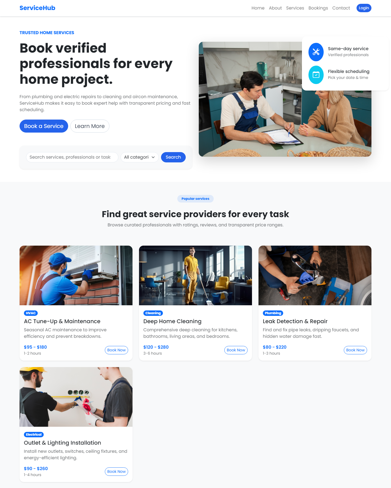
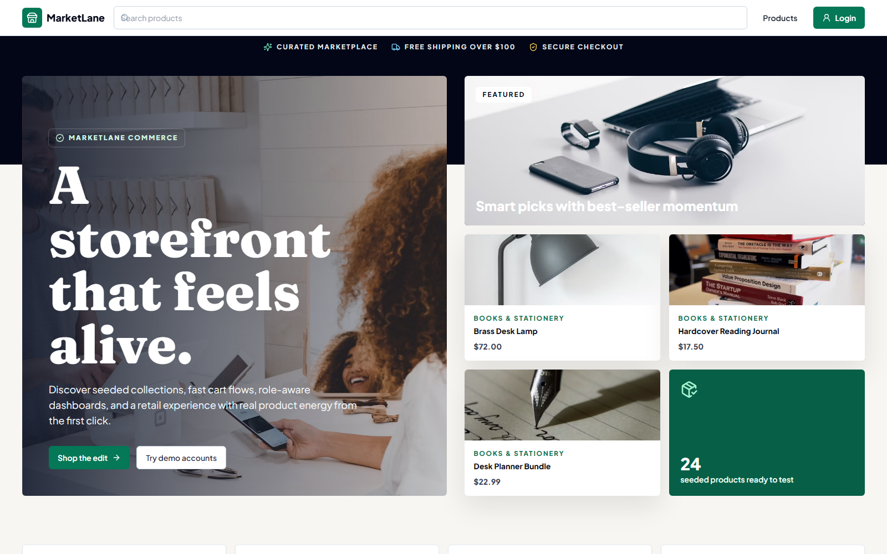

Open to web developer roles and freelance work
Kenneth M. Andallaza
Junior Web Developer building responsive websites, dashboards, and business applications with modern web technologies
I build clean, practical web experiences that help teams work faster and communicate better. My focus is web development with clear UI, solid structure, and systems that feel easy to use from the first click.

Current focus
Job-ready web development
Looking for roles and projects where I can build responsive interfaces, improve business workflows, and keep shipping reliable work.
- Built real systems for Tagum City during OJT work
- Comfortable with web apps, dashboards, and login-based flows
- Available for junior roles, contract work, and freelance builds
Why Hire Me?
A quick case for working with me.
I bring practical web development experience, a steady learning mindset, and a focus on building tools that solve real business problems.
- Built real systems during my internship with the City Government of Tagum
- Experience developing responsive websites and internal tools
- Strong understanding of frontend and backend fundamentals
- Fast learner who enjoys solving practical business problems
About
Focused on useful web products, not filler.
I combine visual clarity, practical backend thinking, and calm execution to build web experiences that feel simple for users and dependable for the team behind them.
I recently graduated with a Bachelor of Science in Information Technology and I am now pursuing web development roles where I can keep growing while contributing to real product work.
The projects I enjoy most are websites, portals, dashboards, and workflow tools. I care about responsive design, maintainable code, clean structure, and making the interface feel clear for the people who depend on it every day.
What I build
Business-ready web interfaces
Responsive pages, dashboards, and portals designed to support real tasks.
How I work
Clear, steady, collaborative
I like structured handoff, thoughtful UI decisions, and delivery without chaos.
What matters most
Usefulness over noise
Fast loading, readable layouts, practical features, and code that stays manageable.
Services
Ways I can help teams and clients.
I am positioning my work around web development, especially the kind of projects that need clear UI, dependable implementation, and practical business value.
01
Responsive business websites
Clean frontends for companies, organizations, and personal brands that need a site that feels modern, readable, and easy to trust.
Landing pages
Responsive UI
Frontend polish
02
Dashboards and internal tools
Interfaces for teams that need workflows, data views, forms, and operational tools that stay organized and easy to navigate.
Dashboards
Forms
Workflow UI
03
Portals and login-based systems
Practical web systems with authentication flows, role-aware screens, and a user experience that supports everyday operations.
Authentication
Portals
System UI
Featured Projects
Projects built around real workflows.
These projects show the kind of web work I want to keep doing: practical interfaces, commerce and booking flows, clear structure, and tools built around real workflows.

Recent sample project
ServiceHub
A responsive home-services booking platform where users can browse services, view details, create an account, and manage bookings through a clean multi-page flow.
I built this as a modern web app sample focused on service discovery, authentication-aware navigation, booking UX, and mobile-friendly interface design that feels easy to use from the first screen.
Marketplace
Bookings
Authentication
Responsive UI
Open live site

Featured sample project
MarketLane
A polished ecommerce marketplace sample with product browsing, cart and checkout flows, order history, and role-aware admin tools for managing store operations.
I built this project to show a fuller retail workflow, combining a customer-facing storefront with practical admin screens for products, inventory, orders, reports, and marketplace data.
Ecommerce
Cart & Checkout
Admin Dashboard
Responsive UI
Open live site

Live system
Leave Management System
A city HR leave portal with workflow-driven login and form access built for a real organizational process.
I focused on a clean entry experience, practical page structure, and a UI that supports staff workflows without unnecessary friction.
Quasar
Laravel
REST API
Workflow UI
Open live site

Live portal
OneTagumVision
A digital monitoring portal and login experience built around Tagum City’s infrastructure and operations context.
This project highlights my interest in web systems that combine interface clarity, authentication flow, and an experience that feels stable and easy to understand.
Portal
Authentication
Monitoring
Responsive UI
Open live site
Experience
Education, client work, and hands-on delivery.
I am early in my career, but the path already includes academic training, freelance work, and real implementation experience on live systems.
Timeline
Freelance WordPress Web Designer
Remote
Built and customized website layouts for clients, strengthening my foundation in responsive design, structure, and delivering visually clean pages.
BS Information Technology
Davao del Norte State College
Started my first year at Davao del Norte State College, building my foundation in information technology, programming, and web development.
Independent Practice and Personal Projects
Continuous learning
Continued building skills through self-driven web projects, experimentation, and steady practice in both frontend and system-oriented development.
Programmer Intern (OJT)
City Government of Tagum
Contributed to web system work tied to real city operations, supporting UI delivery, implementation tasks, and practical workflow-oriented development.
BS Information Technology Graduate
Davao del Norte State College
Graduated from Davao del Norte State College with a focus on practical systems, web development, and turning technical requirements into usable interfaces.
Tech Stack
Technologies I use to build for the web.
These are the core technologies I reach for when building responsive websites, system interfaces, and API-connected experiences.
Frontend
HTML
CSS
JavaScript
React
Next.js
Tailwind
Vite
Backend
Node.js
PHP
Laravel
Python
REST APIs
Database
MySQL
PostgreSQL
Developer Toolkit
Tools I use to design, code, and ship faster.
These are the productivity tools I use around the development process for planning, version control, interface work, and faster iteration.
Daily Workflow
Git
GitHub
VS Code
Cursor
Figma
ChatGPT
Field Notes
Snapshots from learning, building, and showing up.
A few moments from real work, training, and hands-on development that reflect how I like to learn and contribute.


I want the site to show not only what I built, but also the kind of teammate I aim to be: present, dependable, and always improving through real work.
Contact
Let’s build something useful for the web.
I am currently open to junior web developer roles, contract work, and freelance web projects. If you need a responsive website, dashboard, or practical internal tool, I would love to hear about it.
andallazawrk@gmail.com